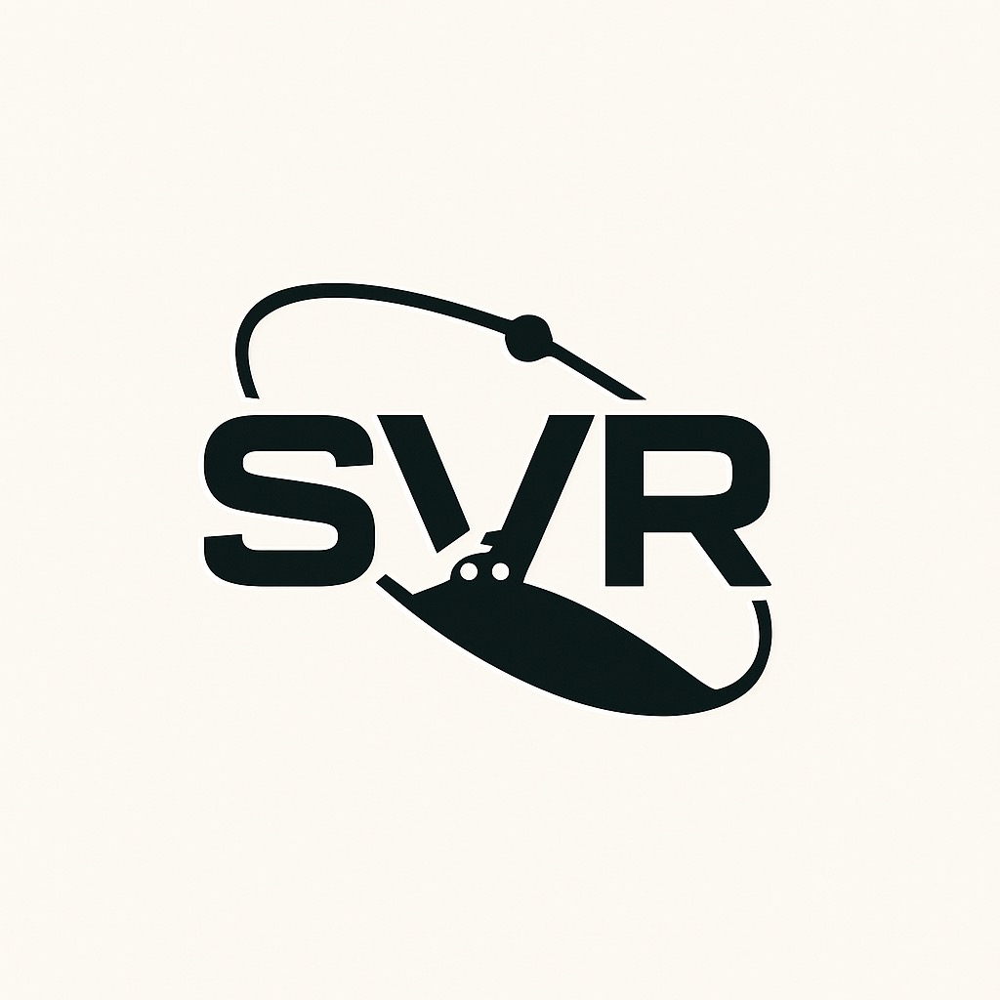

Space Vehicles and Robotics (SVR) Lab
The SVR lab @ Florida Tech

The SVR lab specializes in the design, development and implementation of novel Guidance Navigation and Control (GNC) strategies for robots and space vehicles. Our research is focused on improving the reliability and robustness of critical GNC algorithms for space missions by applying nonlinear adaptive control, machine learning strategies or a combination of both. These robust algorithms are relevant for several applications in the growing space industry. Although the theoretical development is fundamental part of SVR lab’s research. We also believe that thorough on-ground testing of these algorithms using state-of-the-art testbeds is necessary. Therefore, we also work on designing and building testing equipment.Facilities and Equipment
Workstations
- Mac studio M2: 12-core CPU, 30-core GPU, 16-core neural engine, 64GB unified Memory.
- Linux/Windows workstations: Intel core i7, NVIDIA RTX 4060, 16 GB memory.
- Workstations are remotely accessible and connected to a local network, enabling the development of distributed applications.
- We have access, through Florida Tech, to software: MATLAB, STK, LabVIEW, PTC Creo, etc.
Embedded Computers
-
Small computers to test flight software subject to the limitations imposed by small satellite on-board computers.
- Raspberry Pi 4 Model B
- NVIDIA Jetson Nano
- NVIDIA Jetson Orin Nano
- NVIDIA Jetson AGX Computers are remotely accessible and connected to a local network, enabling the development of distributed applications
Satellite Simulator
-
The team is currently developing a Simulink based satellite simulator with the modularity necessary to rapidly configure satellites with different GNC hardware configurations and capable of interacting with external hardware and/or software using the Robot Operating System (ROS2) framework. This simulator is suitable for:
- Model-In-the-Loop simulations
- Software-In-the-Loop simulations
- NVIDIA Jetson Orin Nano
- Hardware-In-the-Loop simulations
Electronics
-
Stations with:
- Power supply
- Soldering station
- ESD mat
- Oscilloscope
- Actuators: Brushless DC motors, Motor Drivers
- Sensors: IMUs, stereo cameras.
Access
-
We have access to Florida Tech’s
- 2-meter Helmholtz cage
- Spherical air bearing
- AI.Panther high performance GPU/CPU cluster
- 3D printers